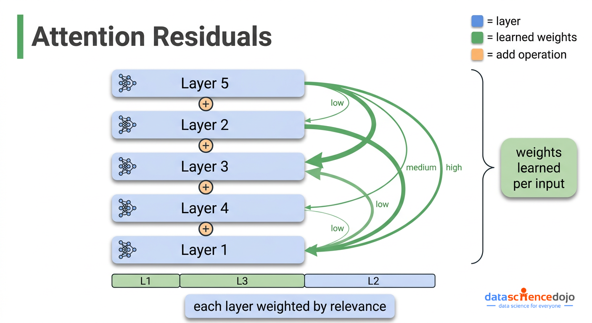
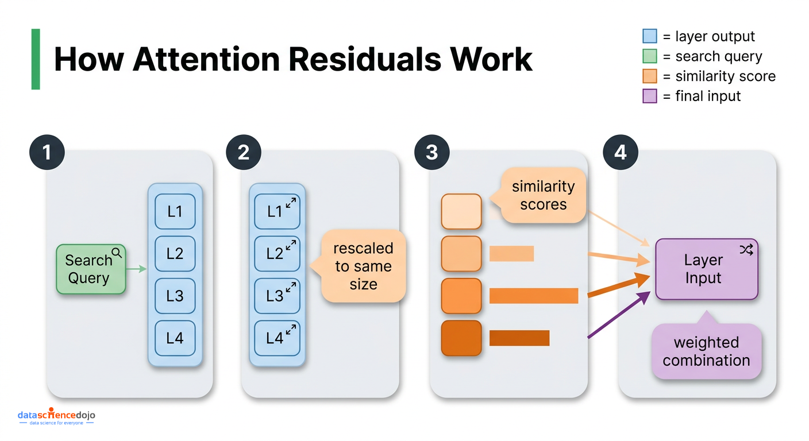

要理解 attention residuals 为什么重要，首先得看清标准残差连接到底在做什么，因为它们承担两个截然不同的角色，而多数讲解只讲了其中一个。
第一个角色是保持训练稳定。训练深层网络时，学习信号（称为梯度）必须从输出一路回传到最早的层。如果没有一条捷径，这个信号在逐层传递时要么衰减殆尽、要么失控膨胀。残差连接就是这条捷径。
第二个角色很少被讨论：它控制信息在网络中逐层堆叠的方式。在每一层，更新长这样：
新隐藏态 = 上一层隐藏态 + 本层算出的东西
如果你顺着所有层追下去，进入任意一层的数值，就是原始输入加上前面每一层的输出，全部按权重 1 相加。模型根本没有机制说「我想要第 3 层多些、第 18 层少些」。每一层的贡献被一视同仁。
相关阅读：如果想在深入之前回顾 transformer 的结构，这篇 transformer 架构入门清晰覆盖了核心组件。

这种等权堆叠带来一个随深度恶化的问题，称为 PreNorm 稀释（PreNorm dilution），下面说它怎么来的。
现代 transformer 会在把累积值送入本层计算前先做重缩放（归一化）。这步成了标准操作，因为它保持训练稳定。每一层发生的事情是：
累积值随每一层只增不减，因为你不断往里加标准尺度的输出。到第 50 层，这堆东西大约是单层输出的 50 倍。第 50 层自己的贡献（标准尺度）现在只占整堆的 1/50。第 100 层只占 1/100。模型理论上还能读到各层贡献，但这些贡献对最终结果的实际影响力，随这堆东西膨胀而持续缩水。
后果不只是理论上的。研究表明，可以从标准 transformer 里直接砍掉相当比例的层，性能几乎不变。模型早就学会了基本忽略那些层，因为它们的贡献被稀释得太狠，根本无关紧要。

这篇论文值得认真对待，是因为它点出了一个真实的结构性平行关系，而这个平行关系直接指向解法。
循环神经网络（RNN）——transformer 之前的统治性序列模型——有完全一样的问题，只是发生在序列维度而非深度维度。处理句子里第 100 个词时，RNN 必须把第 1 到 99 个词的所有信息压缩进一个固定大小的摘要里，越早的词信息越被稀释。
标准残差连接制造了同一个瓶颈，只是方向不同：它不压缩过去的词，而是把所有历史层输出压进一个不断膨胀的累积值。第 3 层产出的信息，第 40 层没法选择性地取回——它只能透过二者之间那团越来越模糊的总量去访问。
Attention Residuals（AttnRes）把 transformer 自己的解法搬到这个问题上，只不过跨的是层，不是词。
它不再把每层贡献权重钉死在 1，而是用加权求和取代固定累加，权重是可学习的、随实际输入变化的：
新隐藏态 = 所有历史层输出的加权和（权重可学习、总和为 1、随输入变化）
因为权重总和为 1（经 softmax，意味着它们互相竞争、加起来恒为 100%），如果第 3 层的输出和第 40 层正在做的事高度相关，第 40 层就可以给第 3 层更高权重、压低其他层。这就是跨层的内容感知检索，和注意力在词与词之间奏效的是同一个思想。
相关阅读：在把注意力与层联系起来之前，想了解注意力如何跨词运作，这篇 self-attention 解析是有用的参考。


attention residuals 的机制比听起来简单。对每一层，计算过程如下：
新增参数量极小：每层一个向量加一次重缩放。对 480 亿参数模型而言这是个四舍五入误差。一个重要的实现细节：这些搜索查询向量在训练开始时必须初始化为 0。这让 Attention Residuals 在初始化时和标准残差完全等价，训练从稳定状态起步，选择性加权随学习逐步浮现。
在标准训练的内存占用上，Full Attention Residuals 基本零开销。它要的层输出本来就是为了反向传播留在内存里的。问题出在大规模训练时。

在 GPU 集群上训练大模型，必须把工作切分到多台机器。两个让这成为可能的技术与此直接相关：
Full AttnRes 和这两者都冲突。每层都需要前面所有层的输出，意味着这些输出不能丢弃重算——必须全程驻留内存。在流水线并行下，这些驻留输出每一步还得跨机器边界传输。内存和通信开销随「层数 × 单层输出大小」成比例增长，放到 128 层模型上就变得不现实。
Block AttnRes 用一步压缩解决它。不再对每一个单独层输出做注意力，而是：
这让内存和通信开销从「随总层数增长」降为「随 block 数增长」。128 层配 8 个 block，每 token 需要驻留的值从 128 份降到 8 份，跨机通信成本同比例缩小。
相关阅读：这篇分布式训练策略文章更详细地讲解了模型并行和流水线阶段如何运作，如果需要基础设施背景可参考。
block 数 N 在两个极端之间：
消融显示 2、4、8 个 block 性能几乎一致，更大的 block（16、32）开始回落到基线。论文选 8 作默认，是因为它在大规模下开销可控，同时保留大部分收益。
推理时，朴素实现会在每一层都重算一遍完整注意力，代价很高。Kimi AI 团队用两阶段规避：
• Phase 1：查询向量是和当前输入无关的已学习参数，所以一个 block 内所有查询提前已知。一次批量计算就处理完该 block 所有层对 block 摘要的注意力，每个摘要只读一次、重复使用
最终结果是：典型负载下推理延迟开销控制在 2% 以内，训练开销控制在 4% 以内。
相关阅读：关于高效推理技术的背景，这篇 KV 缓存与内存优化概览与此处的推理设计决策直接相关。
论文在五种模型规模上对比了标准基线、Full AttnRes、以及约 8 个 block 的 Block AttnRes。
对关心训练成本的人最有意义的是缩放定律结论：Block AttnRes 达到了用 1.25 倍算力训练的标准基线的同等性能。仅仅改变层输出的组合方式，你就能用约 80% 的训练预算拿到同样的模型质量。
涨幅的分布也说得通：它修的正是这个问题。提升最大的是 GPQA-Diamond（+7.5）和 Math（+3.6）这类多步推理任务。这些任务里，后层需要选择性地建立在很早前某层得出的结论上，而不是收到一团被均摊掉的东西。
论文的训练动态数据也值得看。标准基线下，每层输出幅度随深度稳步增长，训练信号高度集中在最浅的几层。Block AttnRes 让输出幅度呈现有界、重复的模式，学习信号更均匀地分布在所有层上。
论文里更有意思的部分是所学权重分布的可视化，它揭示模型并没有简单地把注意力均匀铺开。
从学到的权重里浮现出三种一致的模式：
这些模式不是被设计进去的，而是从训练中涌现的。Block AttnRes 复现了 Full AttnRes 同样的核心结构，只是权重更尖锐、更果断，说明压缩到 block 摘要起到了温和的正则化作用，同时保住了真正重要的信息通路。
标准自注意力处理输入中词与词（token）之间的关系：每个词看其他所有词，决定哪些上下文相关。attention residuals 处理层与层之间的关系：每层看前面所有层的输出，决定要建立在什么之上。两者是完全独立的机制。
需要。它从根本上改变了信息在网络中的流动方式，必须从训练一开始就是架构的一部分。每层的搜索查询向量必须初始化为 0，系统因此从表现得像标准残差起步，再随训练逐步发展出选择性加权。
DenseFormer 也让每层能访问所有历史层输出，但用的是训练一次后冻结的固定权重。论文的消融很明确：DenseFormer 相对基线毫无提升（验证损失 1.767 vs 1.766）。能让收益出现的，是随每个输入自适应的权重。去掉输入依赖权重的 attention residuals 同样表现更差，这证实内容感知的选择才是关键。
Attention Residuals 被设计成标准残差连接的即插即用替代。论文把它集成进一个混合专家（MoE）模型 Kimi Linear 48B，没有改动注意力头、前馈层、路由逻辑或任何其他组件。原则上它应当兼容任何使用标准残差的 transformer，而那几乎就是全部。
论文测了从 1（等价于 Full AttnRes）到 32 的 block 数。2、4、8 个 block 验证损失几乎一致，16 和 32 开始回落到基线。选 8 作默认，是因为它足够小，能在大规模训练中把内存和跨机通信压住，同时保留大部分收益。
如果你是在已有模型上做微调或跑推理，attention residuals 今天不改变你的任何工作流。收益来自训练，集成了 Attention Residuals 的模型会在推理密集型任务上开箱即用地更强。
如果你在大规模训练或微调，论文 GitHub 仓库（摘要里附了链接）包含一份 PyTorch 参考实现。训练开销足够小，值得评估，尤其是算力效率敏感的工作负载。
更重大的影响在架构层面。AttnRes 改变了模型中深度与宽度的 optimal 平衡：论文的架构扫描显示，相比标准基线，AttnRes 受益于更深更窄的网络，因为它真正用得上那些额外的层，而不是把它们浪费在稀释里。
延伸阅读：理解缩放定律与计算最优训练，能给你一个框架，思考这 1.25 倍算力等价结果在更广阔的模型效率研究中处于什么位置。
标准残差连接作为 transformer 设计的固定假设已历时十年。Attention Residuals 不是把它扔掉，而是把它推广：用对所有历史层输出的、可学习且随输入变化的加权求和，取代固定的等权累加。这套机制新增参数极小（每层一个向量加一次归一化），兼容现有架构，在模型规模和任务上带来一致提升。
Block AttnRes 通过把层历史压缩成 block 级摘要，把训练开销压在 4% 以内、推理开销压在 2% 以内，才让它真正可扩展。围绕增量跨机通信和两阶段计算策略的工程工作，是把一个理论上站得住的想法，变成能在分布式训练集群上高效运行的东西。
论文已挂在 arXiv，实现在 GitHub。对做 LLM 训练管线的工程师来说，这是一个有具体证据支撑、值得现在就搞懂的架构改进。